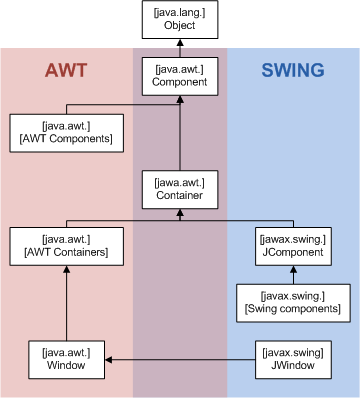

SwingShow

Swing
is a full-featured GUI library written in Java. Swing components are
lightweight
and
do not use
platform-dependent resources.
Image source:
https://en.wikipedia.org/wiki/Swing_%28Java%29#/media/File:AWTSwingClassHierarchy.png